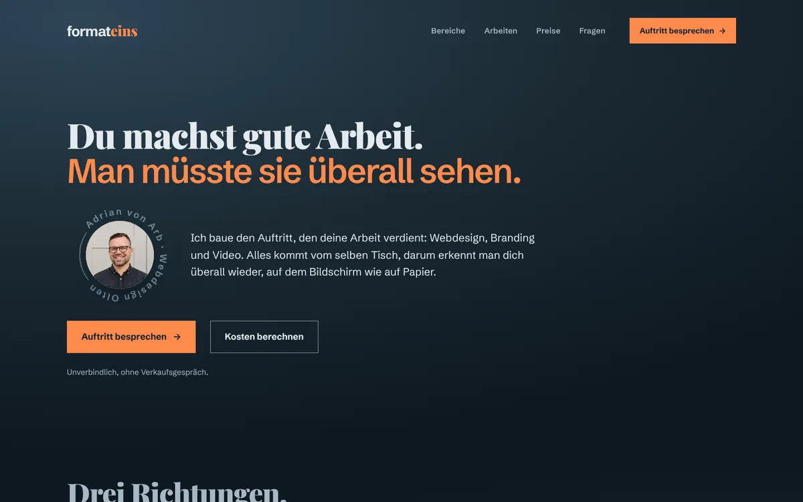
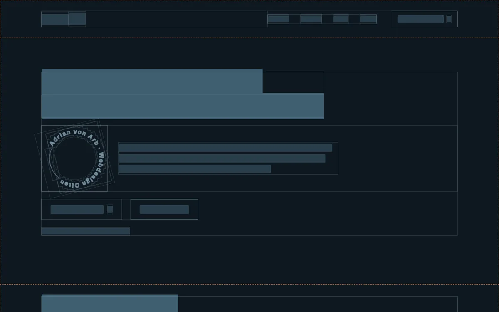
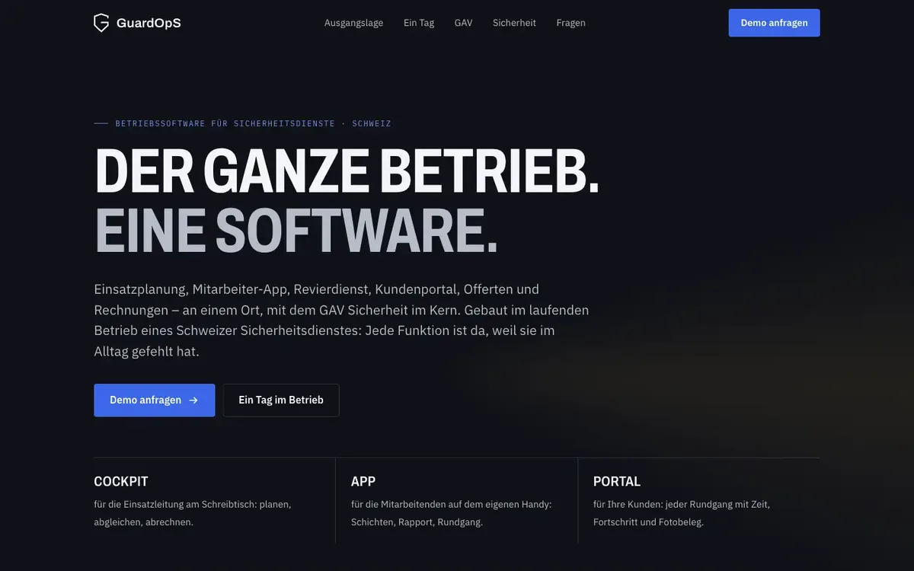
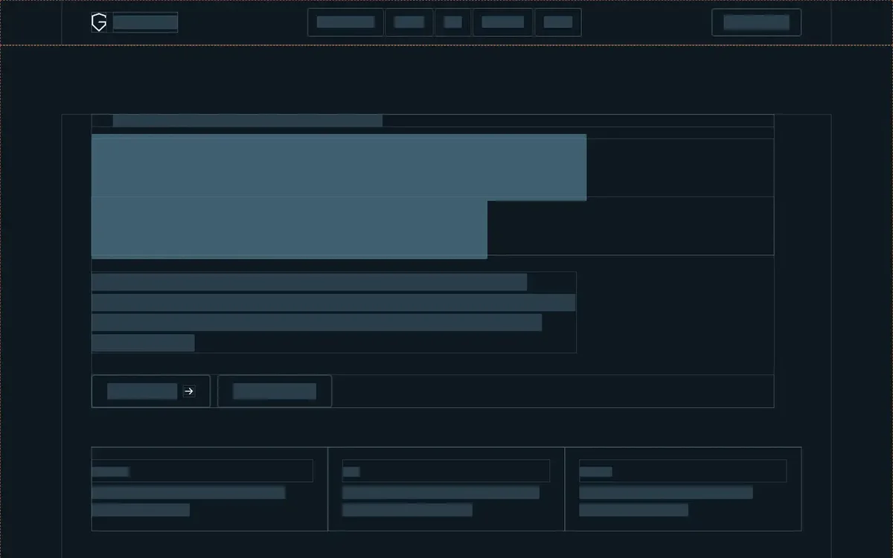
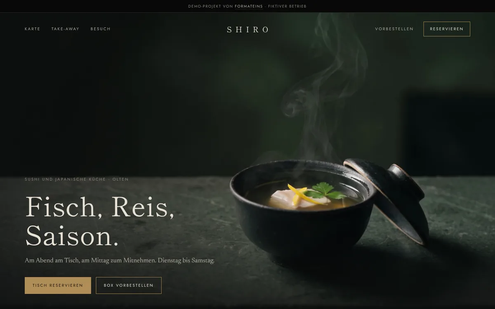
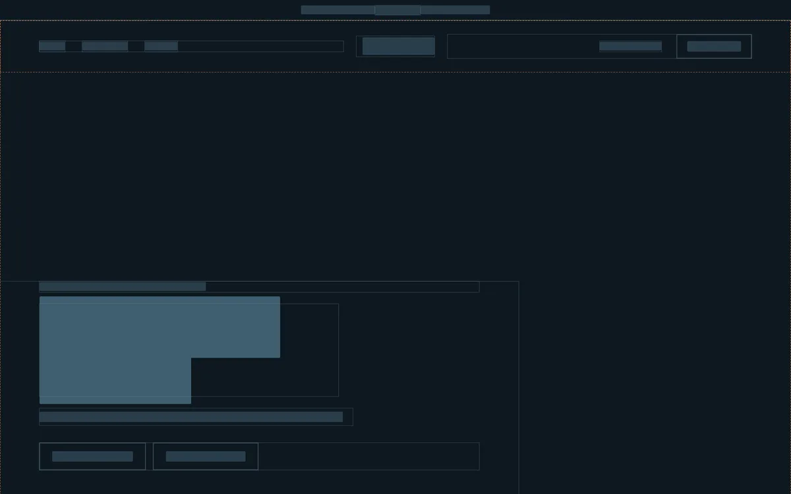

01 · Webdesign
Webdesign.
Die Seite, die zeigt, was du machst, und auf jedem Gerät sitzt. Ohne Baukasten, zum Festpreis, in drei Grössen.
Was eine Website kostet →
Ich baue den Auftritt, den deine Arbeit verdient: Webdesign, Branding und Video. Alles kommt vom selben Tisch, darum erkennt man dich überall wieder, auf dem Bildschirm wie auf Papier.
Webdesign in Olten und der Region. Website, Branding und Video aus einer Hand, für Selbstständige, kleine Unternehmen und Vereine zwischen Aarau, Zofingen und Solothurn.
01 · Webdesign
Die Seite, die zeigt, was du machst, und auf jedem Gerät sitzt. Ohne Baukasten, zum Festpreis, in drei Grössen.
Was eine Website kostet →02 · Branding
Logo, Farben, zwei Schriften und die Regeln dazu. Daraus folgen Visitenkarte, Briefbogen, Offerte und alles, was danach kommt.
Was Branding kostet →03 · Video
Reels, Spots und Erklärvideos, die deinen Auftritt in Bewegung bringen. Animiert, auf Wunsch mit eigenem Dreh.
Was ein Video kostet →Richtung 01 · Webdesign
Eine Seite, drei oder mehr? Die meisten wissen am Anfang nicht genau, was sie brauchen. Das musst du auch nicht. Zuerst höre ich zu und schaue, was dich ausmacht. Daraus erarbeiten wir gemeinsam einen Webauftritt, der zeigt, was du kannst, zu einem festen Preis.






Richtung 02 · Branding
Zwei Logos, drei Blautöne und eine Website, die von allem nichts weiss? Kommt in den besten Familien vor. Nur wirkst du so kleiner, als du bist. Zusammen klären wir, wofür du stehst und wen du ansprechen willst. Daraus gestalte ich ein Erscheinungsbild, an dem man dich überall wiedererkennt.
Richtung 03 · Video
Deine Kanäle plätschern vor sich hin, und der letzte Post ist acht Wochen her? Dann gehörst du zum Durchschnitt. Zusammen arbeiten wir einen Plan aus: wen du erreichen willst und was hängen bleiben soll. Mit modernen Inhalten bringe ich deine Reichweite dorthin, wo deine Stärken sie verdienen.
Eine einzelne Leistung oder ein gemeinsamer Start, je nachdem, was dir gerade fehlt.
Aus allen drei Richtungen ein Stück echte Arbeit. Was hinter den Seiten steckt, steht auf den Projektseiten.
02Video
Social Media, Erklärvideo, Werbevideo, Imagefilm
Was ein Video kostet →
Keine Überraschungen dazwischen. Du weisst vor dem ersten Gespräch, woran du bist.
Auftritt besprechen→Dreissig Minuten, am Telefon oder bei dir. Du sagst, was du machst und was dem Auftritt fehlt. Ich sage, was es braucht, und was nicht.
Ein Festpreis für das, was wirklich nötig ist, innert drei Tagen. Brauchst du weniger, als du denkst, sage ich dir das, auch wenn es mich Geld kostet.
Zuerst die Inhalte, dann die Form. Du siehst den Stand zwischendurch und sagst, was nicht stimmt. Kurze Wege statt langer Sitzungen.
Seite, Markenblatt oder Film sind fertig und im Einsatz. Dazu bekommst du alles, was dir gehört: Dateien, Zugänge, Logo in allen Formaten. Änderst du später etwas, bezahlst du genau das.
Lieber jetzt ehrlich als in Woche sechs.
Deine Frage ist nicht dabei? Schreib sie in den Kostenrechner, ganz am Schluss hat sie Platz.
Nicht über ein Login, und das ist Absicht. Ohne CMS gibt es keine Updates, keine Erweiterungen und nichts, was über Nacht kaputtgeht. Änderungen schickst du mir, ich setze sie um und verrechne den Aufwand. Kein Abo.
Für eine Seite, die zeigt, was du machst, ist das zu viel Maschine: laufende Updates, Sicherheitslücken, monatliche Gebühren. Als eigene Seite ohne CMS lädt sie schneller, ist sicherer und kostet laufend nur Hosting und Domain.
Ja. Sie ist für mich ein Werkzeug wie die Kamera: Sie erledigt das Technische schneller, als ich es von Hand könnte. Dein Vorteil: Ich kann dir einen attraktiveren Preis anbieten. Was sie nicht kann, ist der Grund, warum du zu mir kommst: hinschauen, zuhören, entscheiden, was zu dir passt. Dort setze ich meine Zeit ein, bei Gestaltung, Bild und Bewegtbild.
Das hängt vom Umfang ab und davon, was an Texten und Bildern schon da ist. Einen Startpreis mit „ab“ nenne ich bewusst nicht, er sagt wenig über die Rechnung am Ende. Der Kostenrechner zeigt dir in sieben Fragen einen Rahmen, danach bekommst du einen Festpreis. Was die drei Grössen kosten und was den Preis bewegt, steht im Ratgeber Website erstellen lassen: Was kostet das? Unter tausend Franken gibt es bei mir keine Website.
Üblich sind rund zwei Monate ab Zusage. Am meisten Zeit brauchen meist Texte und Bilder, nicht der Bau. Hast du einen festen Termin, sag ihn früh.
Ja, ich fotografiere und filme selbst. Fehlen gute Bilder, komme ich zu dir, und Bilder und Seite passen danach zusammen. Das offeriere ich separat, weil Anfahrt und Umfang den Preis bestimmen.
Die Seite ist so gebaut, dass Google sie gut lesen kann: sauberer Aufbau, schnelle Ladezeit, die nötigen Angaben im Hintergrund. Einen Platz ganz oben garantiert dir niemand ehrlich. Für Suchen in der Region zählt zusätzlich dein Google-Unternehmensprofil, ich sage dir, was es dafür braucht.
Ich sitze in der Region Olten und komme für Gespräche und Fotos gern vorbei. Wer weiter weg ist, mit dem geht vieles auch per Telefon oder Video.

Ich bin Adrian, der kreative Kopf hinter formateins. Ich glaube, dass gute Arbeit gesehen werden muss, und dass der Auftritt dazu so eigen sein darf wie der Mensch dahinter.
Deshalb verstehe ich mich als strategischer Partner, nicht nur als Umsetzer: Ich höre zu, stelle die Fragen, die weiterbringen, und baue daraus Website, Marke und Film, die sich nach dir anfühlen.